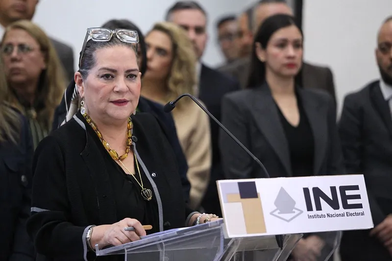
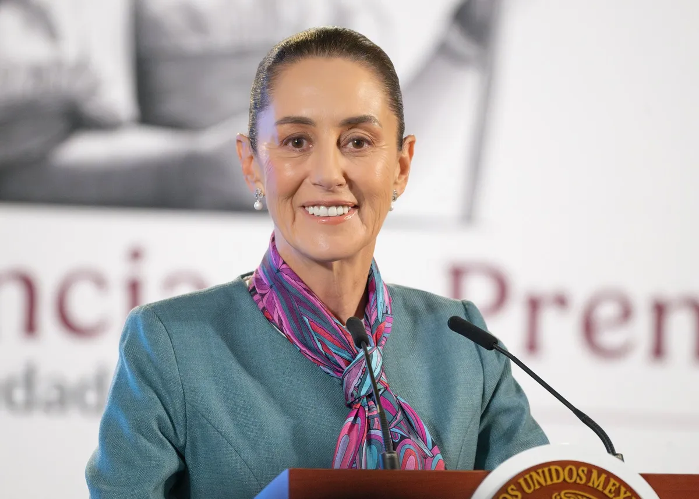
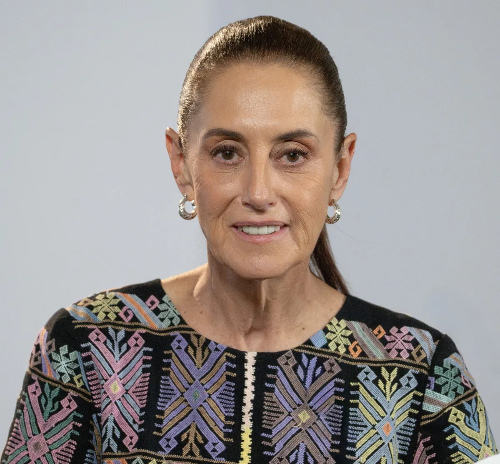

OKpolítico
OKpolíticoINE: noticias de hoy
El Instituto Nacional Electoral: decisiones, presupuesto y organización electoral. Última actualización: 5 de noviembre de 2026.
5 cosas de la mañanera del martes 3 de noviembre
Resumen de la conferencia matutina del martes 3 de noviembre de 2026. Se presentaron los planes de acción para el ISSSTE e IMSS, posturas sobre el INE, investigaciones por desvío d
4 de noviembre de 2026

Renuncia de Guadalupe Taddei y la nueva presidenta del INE
En este video de OKpolítico explicamos la renuncia de Guadalupe Taddei del INE, los contratos cuestionados, la “limpia” interna encabezada por Blanca Yassahara Cruz García y el pro
31 de octubre de 2026
5 cosas de la mañanera del viernes 30 de octubre
Resumen en cinco puntos de la conferencia matutina del viernes 30 de octubre de 2026. La presidenta Claudia Sheinbaum abordó las licitaciones de papelería en el INE, la situación d
31 de octubre de 2026
5 cosas de la mañanera del jueves 29 de octubre
Resumen de los temas clave de la conferencia matutina del jueves 29 de octubre de 2026. La presidenta Claudia Sheinbaum se pronunció sobre contrataciones en el INE, se rindió homen
30 de octubre de 20265 cosas de la mañanera del miércoles 28 de octubre
Resumen de la conferencia matutina del miércoles 28 de octubre de 2026. Se abordó el acuerdo de inversión para el agua en Guadalajara, la inauguración del puente Amado Nervo, las d
29 de octubre de 2026Sheinbaum pide auditar contratos del INE en la gestión de Córdova
La presidenta Claudia Sheinbaum pidió transparentar y auditar los contratos otorgados por el INE durante administraciones anteriores, incluyendo la de Lorenzo Córdova.
28 de octubre de 2026
Crisis en el INE: La renuncia de Guadalupe Taddei
Guadalupe Taddei renuncia a la presidencia del INE en medio de una crisis por presuntos actos de corrupción y conflictos de interés. En este video de OKpolítico explica, analizamos
28 de octubre de 2026Monreal arranca el proceso para sustituir a Guadalupe Taddei en el INE
Seguimiento: Ricardo Monreal, presidente de la Jucopo en San Lázaro, anunció el inicio del proceso legislativo para nombrar a la persona que sustituirá a Guadalupe Taddei en la pre
26 de octubre de 2026